← 返回阅读库 · 原论文目录
论文讲解阅读文档 · 表征学习 · v184
Transf. Meta-learners for Implicit Neural Representations[2208.02801]
视频时长 00:09:58；讲解文字 4,379 字符；提取讲解画面 22 张。按视频原顺序阅读，每段文字保留时间戳。
文字来自整段视频的自动语音转写，按自然停顿分段，并与 PPT / 论文页面 / 演示画面对齐。未将讲解压缩为摘要；术语、数字和口述公式请结合画面及原论文核对。 阅读稿已校正规范部分明确术语误识别；原始逐字稿和每处修改记录另行保留。
讲解画面为源视频截图（640×360），不是可编辑 PPT 文件。全片按每秒 2 帧扫描内容变化，逐步展开页保留；连续动画保留代表画面。清晰度受源视频限制。
下载完整资料包 · 含离线 HTML、PDF、Word、全部 PPT 画面和字幕。
原论文与材料
Transformers as Meta-Learners for Implicit Neural Representations · 下载完整 PDF（18 页）
按时间阅读
00:00:00–00:00:06 · 画面 001
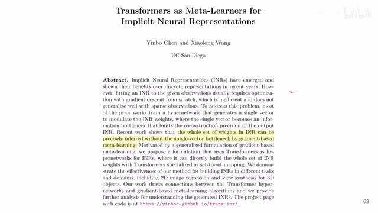
00:00:00–00:00:06 · 画面 001大家好 今天我们来快速说一篇论文 Transformers as Meta-Learners for Implicit Neural Representations 首先 INR Implicit Neural Representations 这个是什么东西很简单的就是你用一个网络比如说一个经典的 MLP 你用它呢去来存储一些信息
00:00:06–00:01:30 · 画面 002
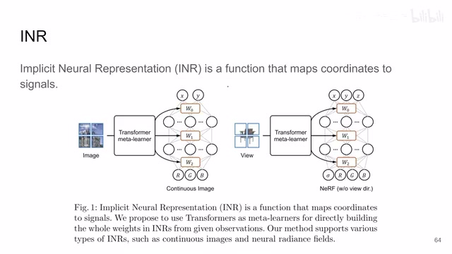
00:00:06–00:01:30 · 画面 002它就像一个数据库一样对吧你把你要输入的东西你要瞎找的东西扔到这个函数里面然后这个函数给你一个值就像数据库一样把这个值给你提出来比如说图像这个场景下一个 MLP 你图像里面想知道无非就是 XY 坐标下这个图像的 RGB 的颜色对吧你把 XY 输入进去MLP 就给你一个 RGB 的颜色这是一个像素的值你把整个图像都查一遍你这张图像就从网络中给它查询出来了你就有一张图像了同样的比如说这是 3D 的情况下你除了物体的本身的信息你还有一个视角或者说你更进一步像 NERF 这些东西都是你把想查询的参数条件作为输入送到你的网络里面
这个网络会给你一个特定的你关心的值那像我们一般训练 INR 的时候呢都是我直接 XY 对吧我有这个相应的 Ground Truth 我就直接做 Gradient Descent 那我直接用梯度下降一个监督的训练就训练出来就可以了但是呢这就意味着你对每一张图像都要做这么一个过程因为你这一个整个网络它只能存储一张图像那来了不同的图像你都要做这么一遍训练的过程那为了简化这个过程呢我们就需要引入这个 meta learning 那首先呢一些基本的这个标记那这里呢这个问题的定义呢就是我们想根据我们的 observation 其实本质上就是我们各种数据吧来恢复出一个 signal 这个 signal 所谓的呢就是一个方式它把一个 x 值映射到 y 就像我们在刚才的例子里面
00:01:30–00:01:54 · 画面 003
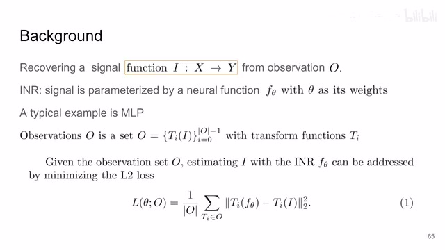
00:01:30–00:01:54 · 画面 003这个图像中的 XY 坐标作为 X 输入对吧映射出一个图像的 RGB 值那这个呢就是我们的情境对吧这里我们要学的是这个方式
00:01:54–00:01:55 · 画面 004
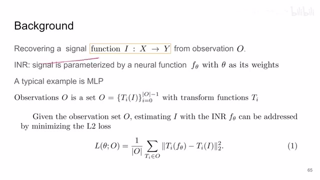
00:01:54–00:01:55 · 画面 004就是这个 RN2
00:01:55–00:02:01 · 画面 005
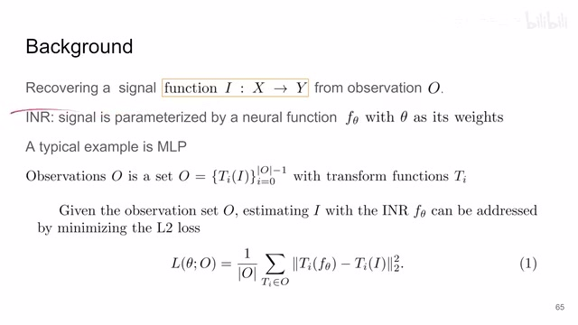
00:01:55–00:02:01 · 画面 005然后呢它呢是一个 MLP本质上呢我们就要学这个 MLP 里面它的具体的权重那像这些你看着很复杂
00:02:01–00:02:04 · 画面 006
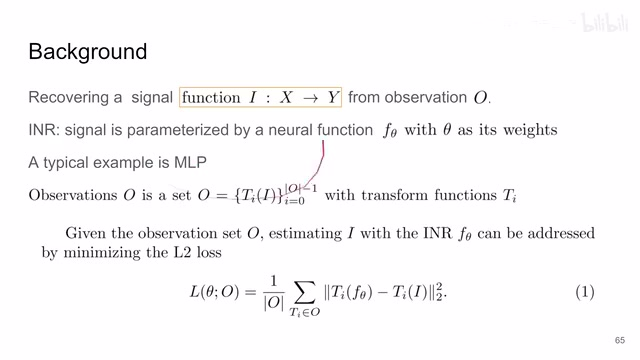
00:02:01–00:02:04 · 画面 006其实它本质上就是说我用一个网络
00:02:04–00:02:17 · 画面 007
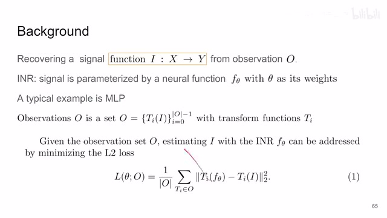
00:02:04–00:02:17 · 画面 007现在我用一个 MLP 嘛近似这个 signal近似这个方式对吧我近似出来的结果我根据我这个网络重建出来的这个图像比如说然后跟我的 ground truth 相比它这个 MSE 嘛
00:02:17–00:02:19 · 画面 008
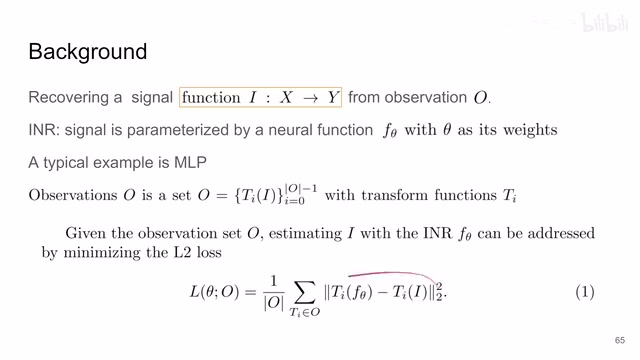
00:02:17–00:02:19 · 画面 008这个误差算一下
00:02:19–00:02:56 · 画面 009
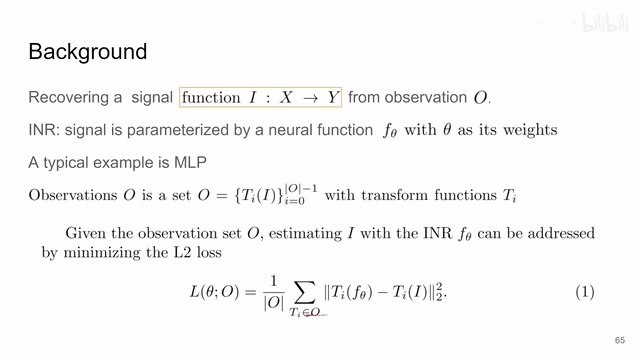
00:02:19–00:02:56 · 画面 009把这个 loss给它降下来就可以了但是这里我们为什么说它是 Meta Learning是区别于普通的 Learning 呢因为我们来看正常我们 Learning一个 task就是把一张图像压到这个 MLP 里面这是一个任务那现在呢我们有很多张图像每张图像呢我们都要分别的把它压到各自的 MLP 里面那本质上就相当于我们需要学很多个 MLP那本质上它就是很多个不同的任务我们现在是想学一个关于这些很多个任务它们共通的一些特性那这个学习的过程呢就是 Meta Learning
00:02:56–00:03:55 · 画面 010
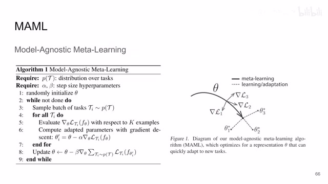
00:02:56–00:03:55 · 画面 010对吧你看到英文你看到英文里面对 meta learning 的描述对吧 learn x about x 那后面这个 x 呢就是我们具体的每一个任务那到这里呢就是一个 image regression 就是把一张图像压到一个 mlp 里面这样一个任务那前面的这个 xlearn x 就是我们最终想要的这样一个东西对很多个不同的 task 通用的东西这里有一个经典的方法叫做 model-agnostic meta-learning 它本质上是用梯度的方法我们现在代入到这个场景里面代入到 image regression 的场景里面我们有一个 theta 这是我们想学习的
我们这个θ我假如说压缩第一张图像它给我们一个梯度的方向我们为了让它能够更好的压缩第一张图像它这个梯度该往这个方向走那我为了更好的压缩第二张图像它梯度呢该往这个方向走那第三个图像对吧梯度该往这个方向走那最终我们这个θ该走到哪里呢这里呢就要把这三个任务共同来考虑我们给它前进到这一步那么这个呢是这一篇 MAML 的核心的思想那它继续更新的过程呢就用了规定体论因为从它里面的那层任务想要学的那个任务到外面的这层任务到 Meta Learning 这个任务中间的梯度呢是连续的可以传递的那当然说你如果说这个梯度不传递它也有办法你就用这些 Evolutionary Search 这些进化方法对吧来去做一样也能做只不过这里有梯度为什么不用呢那么这个呢是这一篇文章它的这个思想
00:03:55–00:03:56 · 画面 011
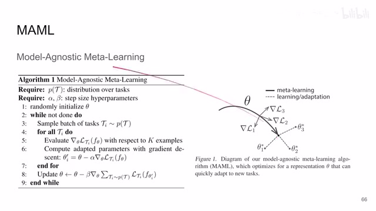
00:03:55–00:03:56 · 画面 01100:03:56–00:04:24 · 画面 012
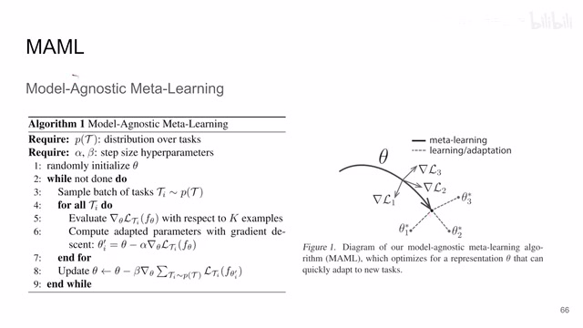
00:03:56–00:04:24 · 画面 01200:04:24–00:04:40 · 画面 013
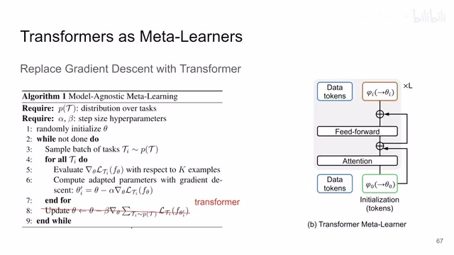
00:04:24–00:04:40 · 画面 013那么在本文呢作者提出说我不要用这些东西来更新我这个θ这个参数了我现在呢用一个 transformer 通过这个梯度下降来调整这个 transformer 里面的各种这个参数的值来告诉我们该怎么样更新这个参数这个呢就是本文的核心的思想那首先在这里我们要学一个 N2 这个 N2 呢就是一个 MLP 嘛我们要学它学什么呢就是 MLP 里面的参数嘛就是每一层 MLP 的权重
00:04:40–00:04:41 · 画面 014
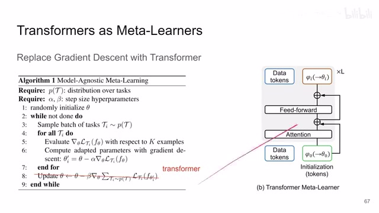
00:04:40–00:04:41 · 画面 01400:04:41–00:06:41 · 画面 015
00:04:41–00:06:41 · 画面 015那这里呢作者用这个 w 来表示那 w 你想它就是一个矩阵嘛它的行数呢是我 input 的这个行数它的列数呢就是我 output 的这个列数那当然这个只是成全中的情况你还会加 bias 你会再有一个长度是 output 的这么一个这个向量作为 bias 向最后加在这个你的模型的输出后面那这里呢作者把它们都包在一起了对吧我们就本质上就是学这么一个矩阵那具体要怎么学呢那首先呢这里作者拿了一个这个 vision transformer 这个 transformer encoder 你像左边这块就是把我们正常的一张图像切成一个 patch 然后投影作为一个 token 送到 transformer 里面这个都是常规的操作那本文的重点在于他新加了这样一堆其他的 token 这里呢叫 initialization token 就像这个 classification token 一样就是 random initialize 然后还是可以学习的
这么一堆 token 加起来一起和这些 data token 做处理然后你就做嘛对吧过了这个 transformer encoder 你 data token 呢还是前面这块我们不太在意它本身那我重点在意的是这些 initialization token 它集合了这些 data token 之后的信息这里作者把它输出的信息叫做 weight tokens 对于这些 weight token 作者通过另一个权链接层把这一个个 token 就变成了我们 MLP 里面的权重的矩阵那么然后你就拿 MLP 去做其他的任务就好了更具体来看比如说这里作者用了 4 个 initialization token 对吧这里就是最后算出来是 4 个 weight token 中间 transformer encoder 它就会把 data token 的信息相互灌到 weight token 里面
那么一个 token 就是一个 vector 前面这两个 token 两个 vector 作者把它们认为是两个列这两个列就构成了第一层的 W0 权重的矩阵就是你两列并在一起就是这一层的权重后面这两个 token 对吧就是第二层的权重 W1 这两个列也是并在一起就是另一个矩阵非常直接的就把这个参数给它投影过来了
00:06:41–00:08:30 · 画面 016
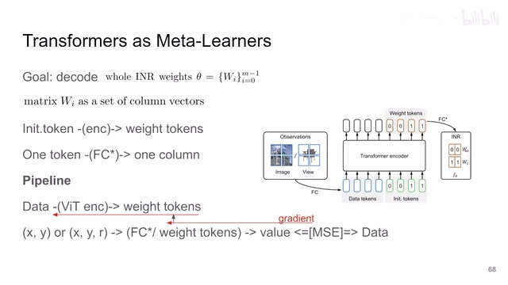
00:06:41–00:08:30 · 画面 016那这个全连接层无非就是调整一下这个 token 它本身这个 vector 的长度而已嘛用来适配你 INR 这一层它的输入的这个长度是多少那然后我们应该怎么样训练这个网络呢我们来看到首先监督信号从哪里来那么它的监督信号呢我们一开始说到了就是你 XY 输进来 XY 坐标输进来然后呢输出一个 RGB 的值这个 RGB 的值应该跟我们实际的这个图像它对应对吧那么你的 loss 呢就是这个 INR它的输出的 MSE 这个 loss 然后呢你就算算 gradient 针对这一个 NR 这个任务它的 MSE 算出来的 gradient 你可以对每一个这个 NR 里面的每一个参数都有一个 gradient 那这个权重是怎么来的呢是通过我们这个权力阶层从我们的 transformer token 里面来的所以呢这个 T2 呢一路就可以通过这个权力阶层传递到
这个 transformer 的这些输出的这个 v token 上那最终呢这个 v token 呢再把整个梯度通过这个 transformer encoder 再传回来最终传到你的 data token 传到你的这个 initialization tokens 那么这样子呢这个梯度的流就过来了所以你看到这个过程，它从里面的任务到外面的任务的时候，它的梯度中间是连续的，我们可以直接传递下来的，这样就给我们优化带来很大的便利。那么基本的训练的流程就是这样，Loss 也是非常的简单。那么当然你在实际做的时候，一层 MLP 它里面的矩阵是很大的，它有很多个列，你如果说每一个列都给它分配一个 token
00:08:30–00:09:32 · 画面 017
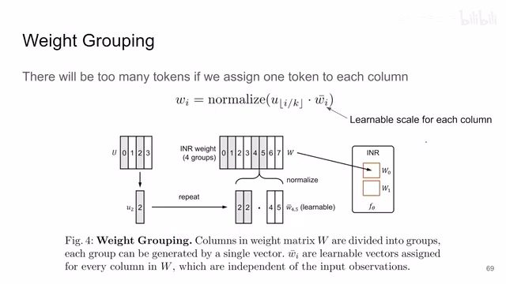
00:08:30–00:09:32 · 画面 017那这样子的这个 transformer 就会变得太庞大了，对吧？不太好训练。那怎么办呢？这里作者用了一个很简单的技巧，这个 weight grouping，那就是原来我是一列用一个 token，那现在呢，我是很多列用一个 token。比如说这里 0 和 1 这两列，他就用前面这个 token，那 2 和 3 就用这个 token4 和 5 就用这个 token那你两页用同一个 token 的时候，怎么保证这两列的参数不一样呢？那这个时候呢，我们还学习另外一个这个 scale。这里就是每一列我单独学习一个 scale，和这个 token 本身相乘。那这样子呢，就让你矩阵的每一列它都有自己的权重。那么然后呢，这里作者还做了这个 normalization
对吧？就是你要保证你这 MLP 投完之后，最后的输出的结果它的范围不要太离谱，对吧？所以每一层的权重都会做 normalization。这里用的是 L2normalization。那么通过这样一种操作，就可以成倍的缩减我们需要的 token 的数量。就现在一个 token 管很多列，然后每一个列再稍微的微调一下就可以了好了，那么以上就是本文的主要的技术细节。下面我们来看一些作者汇报的结果。这里的 image regression 就是把一张图压缩到一个 MLP 里面，包括这个 ablation 就是你有多少个 weight token 或者叫多少个 groups。当然你也可以用它做 view synthesis。好的，那么以上就是我对这篇论文的一个快速的整理，重点还是帮我们串联系 INRMeta Learning 这些东西这些基本的概念。那么感谢您的收看，再见
00:09:32–00:09:33 · 画面 018
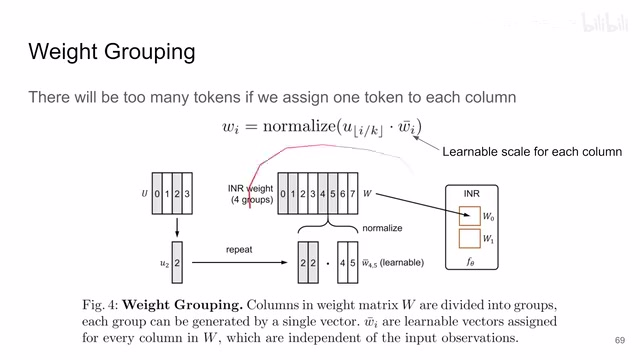
00:09:32–00:09:33 · 画面 01800:09:33–00:09:34 · 画面 019
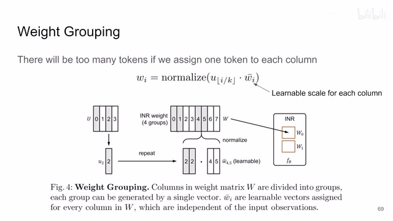
00:09:33–00:09:34 · 画面 01900:09:34–00:09:45 · 画面 020
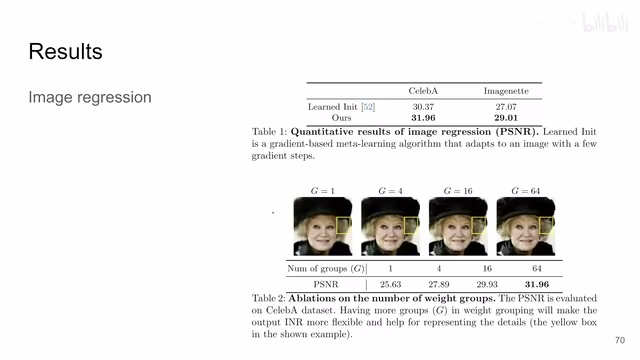
00:09:34–00:09:45 · 画面 02000:09:45–00:09:58 · 画面 021
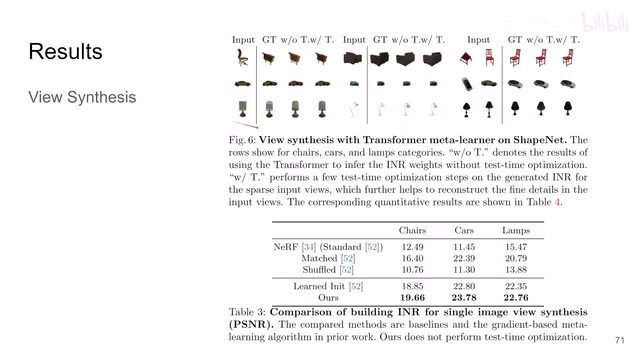
00:09:45–00:09:58 · 画面 02100:09:58–00:09:58 · 画面 022
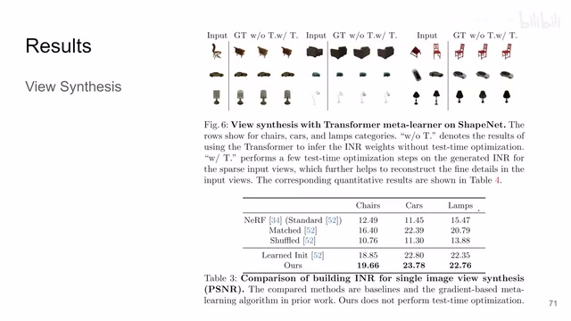
00:09:58–00:09:58 · 画面 022转写与来源说明 · 1 个自动复核提示
保留 78 个原始语音片段，1 个片段触发自动复核提示。提示仅用于定位可能的术语、重复或识别问题，不等于已确认错误。
讲解画面为源视频截图（640×360），不是可编辑 PPT 文件。全片按每秒 2 帧扫描内容变化，逐步展开页保留；连续动画保留代表画面。清晰度受源视频限制。
原视频：paper/合集_2026-10-16_表征学习/[论文简析]Transf. Meta-learners for Implicit Neural Representations[2208.02801].mp4
SHA-256：4c07bd7bc5b8687e6a4bc99c2b62ab84902a00af991bcd547acc943c0e0dc11e
它是 Meta Learning
全文按视频语音与画面制作。原论文可从上方链接下载；完整资料包保留全文、原始逐字稿、字幕和校对记录。